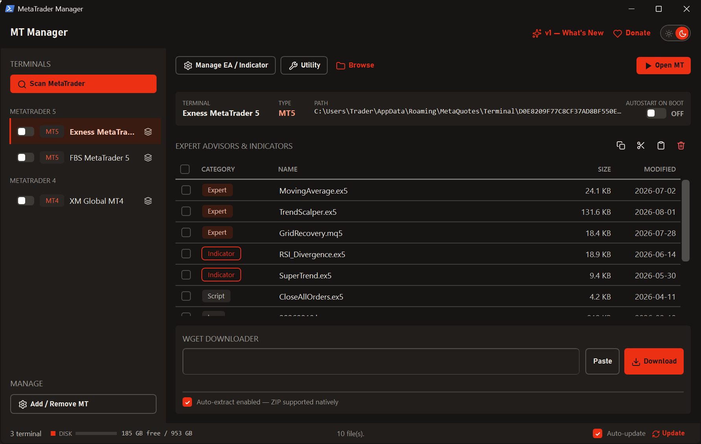
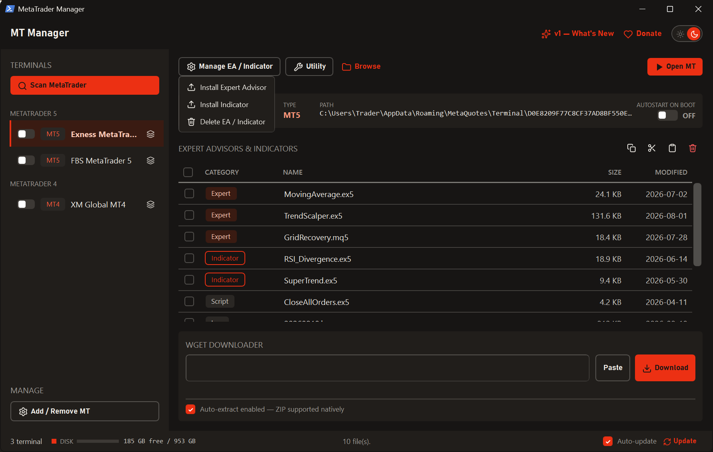
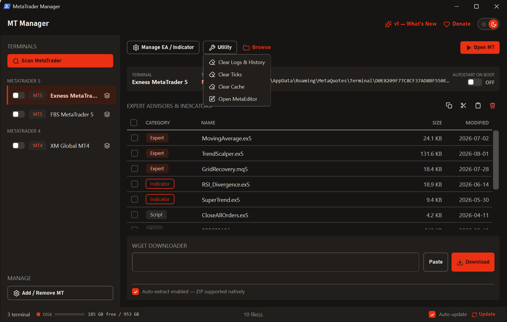
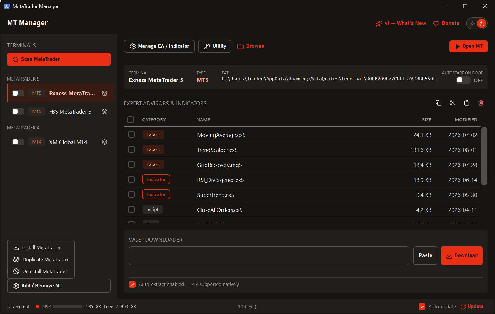
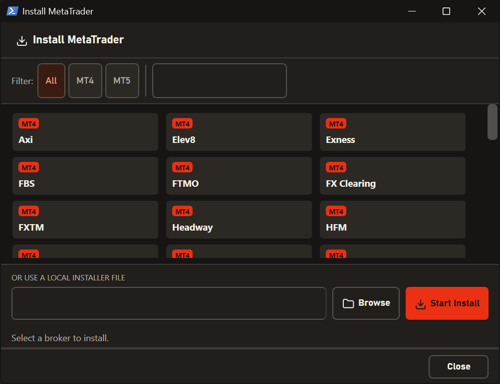
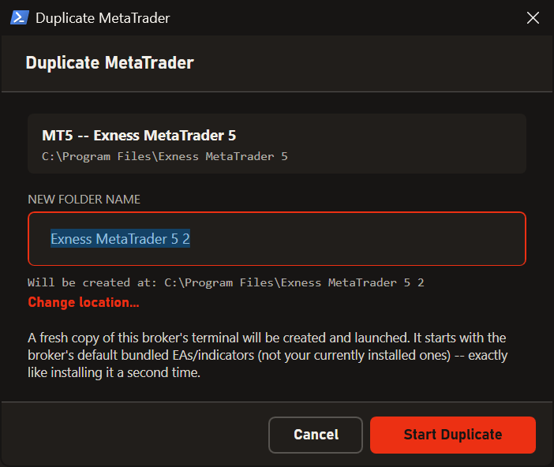
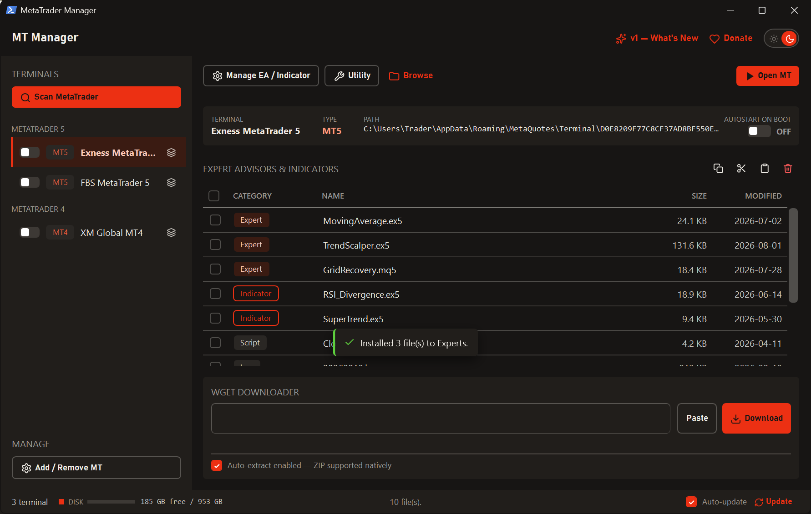
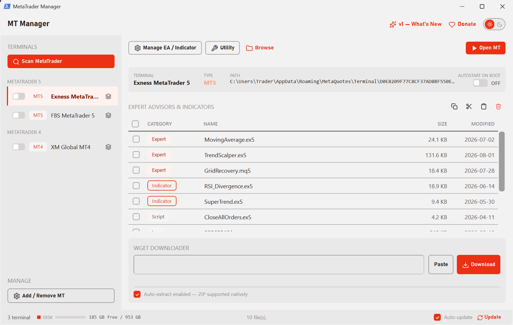
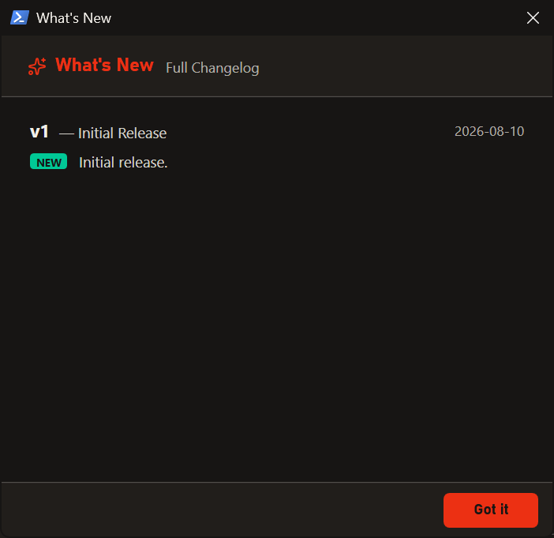

MT Manager finds every MT4 and MT5 installed on your PC, manages your EAs and indicators, clears out junk files, duplicates terminals, and downloads EAs straight from a link — all from a single window.

If you run more than one MetaTrader account, the small jobs become the tiring ones.
Logs, Bases and Tester yourself.MT Manager brings all of it into one place. Your terminals are detected for you, their contents are laid out by category, and every action is a single click away.
No configuration, no setup wizard. Open it, scan, and start working.
Hit Scan MetaTrader and every installed MT4/MT5 shows up in the sidebar, grouped by type. Select one to see its name, platform, data folder and whether it starts with Windows.
Its contents appear as one clean list with a colour-coded label per category, along with each file's size and last-modified date.
Install an EA or indicator into the selected terminal without ever needing to know which folder it belongs in. Need to remove some? Tick several files and delete them in one go.
Copy / Cut / Paste works across terminals too, which makes putting the same EA on several accounts quick.

MetaTrader quietly piles up logs, price history, tick data and tester caches that can swallow tens of gigabytes. The Utility menu clears them by type, so you choose exactly what goes without touching your EAs or settings.
MetaEditor opens straight from here as well.

One menu covers the whole lifecycle: Install MetaTrader, Duplicate MetaTrader and Uninstall MetaTrader.
No hunting for broker download pages, no digging through Programs and Features.

Install MetaTrader gives you a searchable list you can filter by MT4 or MT5 — pick a broker and the rest happens on its own.
Already have an installer file of your own? Point it at that instead.

Duplicate MetaTrader creates a second terminal from the same broker, shows a copy progress bar, and launches it once it's done.
Handy when you hold several accounts at one broker and want each to have its own terminal.

Messages appear briefly above the downloader and fade on their own. No more dialog boxes to dismiss every time something finishes.

One click switches the theme and the whole app follows instantly — title bar included.
Your choice is remembered, so it opens the way you left it.

MT Manager checks for updates, downloads, installs and restarts itself — you just press one button.
Every release comes with notes you can read any time from What's New.

Paste a URL — or a full wget command — into the Wget Downloader box and the file downloads with a progress bar. .zip files are extracted automatically the moment they finish, so an EA is ready without a detour through File Explorer.
Every terminal gets its own autostart switch. Turn it on and that terminal launches whenever Windows boots — ideal for a VPS that has to stay online. Uninstall MT Manager and every entry it created is removed for you.
It's a small desktop utility — if MetaTrader runs, this runs.
Windows 7 SP1 or newer — 8, 8.1, 10 and 11 fully supported, 32-bit and 64-bit.
Already included in Windows 10 (May 2019 update) and later. The installer points you to Microsoft's download if it's missing.
MT4 and/or MT5 installed normally. Portable installations aren't detected.
About 10 MB for the app, and nothing special for RAM — it's a lightweight tool.
Not required — it installs per user. Admin is only needed to duplicate a terminal living inside Program Files.
Only for the broker list, update checks and the downloader. Everything else works offline.
There's nothing to configure afterwards.
Grab the latest installer from the Releases page.
Follow it through. No admin rights needed — it installs for your user account.
Open MT Manager, press Scan MetaTrader, and your terminals appear.
No. It only manages files and folders that belong to your terminals — installing, copying and deleting EAs and indicators, and clearing logs and caches. Your accounts, charts and trading settings are never touched.
MT Manager reads terminals that were installed normally. MetaTrader running in portable mode keeps its data inside its own program folder, so it isn't detected.
No. Only MT Manager's own things are removed — its settings and any autostart entries it created. Your MetaTrader data folders are left untouched.
No, it's completely free.